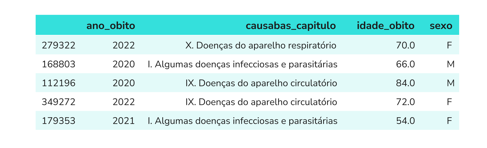

Módulo 2 | Aula 2
Introdução à Análise de Dados com Pandas
Series e DataFrame: as estruturas do Pandas
Na aula anterior, um registro de saúde foi representado por um dicionário, e uma coluna inteira, por uma lista. Para processar essa estrutura manualmente, identificando os pacientes idosos, fomos obrigados a escrever um loop (for) combinado com um teste lógico (if). Esse processo é didático, mas se torna ineficiente quando a base cresce para milhares ou centenas de milhões de linhas.
idades = [58, 64, 12]
for idade in idades:
if idade>=60:
print(f"* Idoso com {idade} anos")
else:
print(f"- Não é idoso e tem {idade} anos")Resultado:
- Não é idoso e tem 58 anos
* Idoso com 64 anos
- Não é idoso e tem 12 anosO Pandas é uma das principais bibliotecas do ecossistema Python para manipulação e análise de dados tabulares. Ela permite realizar muitas operações de forma vetorizada, reduzindo a necessidade de escrever loops manualmente. Toda a biblioteca se apoia em duas estruturas de dados:
São um arranjo unidimensional (vetor) de dados rotulados. Na prática, assemelha-se muito à ideia que temos quando pensamos em uma única coluna de uma planilha (por exemplo, apenas as idades de todos os óbitos, como no exemplo anterior).
É uma estrutura tabular bidimensional, organizada em linhas e colunas. Aqui a ideia é muito similar às planilhas eletrônicas. Cada coluna é uma Series e todas compartilham o mesmo índice de linhas.
Na imagem a seguir, idade_obito e sexo são duas das cinco Series. DataFrame se refere a todo o conjunto. E a primeira coluna, neste caso com números, é o índice do DataFrame.

Como o Pandas não faz parte da biblioteca padrão do Python, precisamos importá-lo antes de utilizá-lo. Para isso, usamos o comando import pandas as pd, que também define pd como um apelido para a biblioteca. Dessa forma, ao utilizar funções e recursos do Pandas, escrevemos pd em vez de pandas, tornando o código mais curto e fácil de ler.
# Importação da biblioteca sob o alias padrão 'pd'
import pandas as pd
# Criando uma Series isolada representando idades de óbitos
idades_obitos = pd.Series([72, 58, 81, 43, 67])
print(idades_obitos)Resultado:
0 72
1 58
2 81
3 43
4 67
dtype: int64Assim como um conjunto de dados pode ser estruturado como uma lista de dicionários, o Pandas pode converter essa estrutura em um DataFrame:
# Lista de dicionários (fichas do SIM)
registros_sim = [
{"municipio": "Rio de Janeiro", "sexo": "F", "idade_obito": 72, "CID10": "I219"},
{"municipio": "Niterói", "sexo": "M", "idade_obito": 58, "CID10": "C349"},
]
# Conversão direta para DataFrame
df_exemplo = pd.DataFrame(registros_sim)
df_exemploResultado:
| municipio | sexo | idade_obito | CID10 | |
|---|---|---|---|---|
| 0 | Rio de Janeiro | F | 72 | I219 |
| 1 | Niterói | M | 58 | C349 |
A analogia com planilhas eletrônicas ajuda a fixar o vocabulário: o DataFrame equivale à planilha inteira, a Series a uma coluna isolada (como 'sexo' ou 'causa_basica'), o índice ao rótulo numérico de cada linha e o columns à lista de nomes das variáveis registradas.